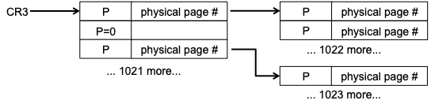
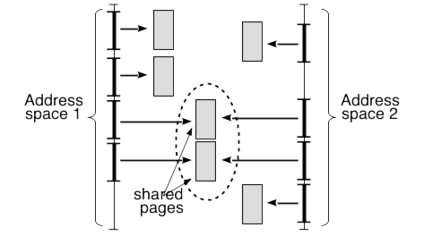
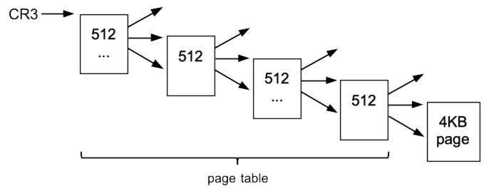
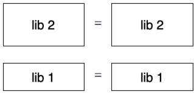
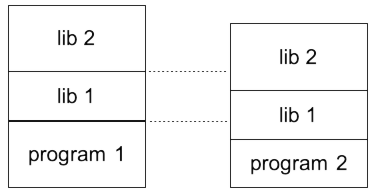
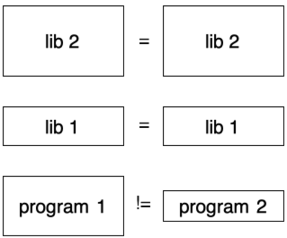

Peter’s Virtual Memory chapter
Contents
22. Peter’s Virtual Memory chapter#
In [chap:osbasics]{reference-type=”autoref” reference=”chap:osbasics”} we discussed operating systems basics such as I/O, program loading, and context switching primarily for a simple computer with a single physical address space. By this we mean that the bits in an address register—for instance the program counter—are the same bits that go out over wires on the motherboard to DIMM sockets and select a particular location in a memory chip, so that no matter what process is executing, the same address (e.g. 0x1000) always refers to the same memory location.
22.1. Base and Bounds translation#

We first looked at direct physical addressing, where no matter which process is executing, the same address (e.g. 0x1000) refers to the same memory location. In addition we reviewed a very simple form of address translation, shown here in [fig:vm:fig1]{reference-type=”autoref” reference=”fig:vm:fig1”}, where base and bounds registers are used to relocate a section of the virtual address space—the addresses seen by the program, corresponding to values in the CPU registers—to somewhere else in the physical address space. By changing these translations the operating system can create multiple virtual address spaces, one per process; however there is still only one physical address space, uniquely identifying each byte in each memory chip. In this chapter we introduce paged address translation, a more complex address translation mechanism used by most modern CPUs, and present the 32-bit Intel implementation as an example.
Limitations of base+bound translation: Modern hardware and operating systems provide a very similar process address space model, but no longer use base and bounds registers for address translation1 , despite it being simple, cheap, and quite possibly faster than alternate methods. There are a number of reasons why base and bounds translation is no longer used, but the fundamental reason is memory fragmentation.
Base and bounds address translation requires a contiguous memory region for each process. If memory is allocated and de-allocated in chunks of different sizes and at different times, then it can become fragmented so that even if large amounts of memory are free, it will be divided into smaller fragments, separated by longer-lived small allocations, as seen in [fig:vm:fig2]{reference-type=”autoref” reference=”fig:vm:fig2”}.
Start: 32 locations, all free
 {width=”80%”}\
{width=”80%”}\
Step 1, 2: a = alloc(10), b = alloc(1)
 {width=”80%”}\
{width=”80%”}\
Step 3, 4, 5: c = alloc(10), d = alloc(1), e = alloc(10)
 {width=”80%”}\
{width=”80%”}\
Step 6, 7, 8: free(a), free(c), free(e)
 {width=”80%”}
{width=”80%”}
In the last line, you can see that only 2 units of memory (out of 32) remain allocated, but the largest amount that can be allocated at one time is 10 units. If all allocation requests are small, this might not be a problem; however, in an operating system it is common to have one or two very large processes (e.g., a web browser and word processing software), and many small, long-running processes (e.g., the on-screen battery display or wifi signal strength indicator). In this case, large memory allocations may fail, even when there is enough total memory free, because long-lived small allocations fragment the available contiguous memory into smaller pieces.
22.2. Paging - Avoiding Fragmentation#
The fragmentation in [fig:vm:fig2]{reference-type=”autoref” reference=”fig:vm:fig2”} is termed external fragmentation, because the memory wasted is external to the regions allocated. This situation can be avoided by compacting memory—moving existing allocations around, thereby consolidating multiple blocks of free memory into a single large chunk. This is a slow process, requiring processes to be paused, large amounts of memory to be copied, and base+bounds registers modified to point to new locations2.
 {height=”8\baselineskip”}
{height=”8\baselineskip”}
Instead, modern CPUs use paged address translation, which divides the physical and virtual memory spaces into fixed-sized pages, typically 4KB, and provides a flexible mapping between virtual and physical pages, as shown in [fig:vm:fig3]{reference-type=”autoref” reference=”fig:vm:fig3”}. The operating system can then maintain a list of free physical pages, and allocate them as needed. Because any combination of physical pages may be used for an allocation request, there is no external fragmentation, and a request will not fail as long as there are enough free physical pages to fulfill it.
22.2.1. Internal Fragmentation#
Paging solves the problem of external fragmentation, but it suffers from
another issue, internal fragmentation, because space may be wasted
inside the allocated pages. E.g. if 10 KB of memory is allocated in
4KB pages, 3 pages (a total of 12 KB) are allocated, and 2KB is wasted.
To allocate hundreds of KB in pages of 4KB this is a minor overhead:
about \(\frac{1}{2}\) a page, or 2 KB, wasted per allocation. But internal
fragmentation makes this approach inefficient for very small allocations
(e.g. the new operator in C++), as shown in
[fig:vm:fig4]{reference-type=”autoref”
reference=”fig:vm:fig4”}. (It is also one reason why even though most
CPUs support multi-megabyte or even multi-gigabyte “huge” pages, which
are slightly more efficient than 4 KB pages, they are rarely used.)
 {width=”90%”}\
{width=”90%”}\
Instead, modern CPUs use paged address translation, which divides the physical and virtual memory spaces into fixed-sized pages, typically 4KB, and provides a flexible mapping between virtual and physical pages, as shown in [fig:vm:fig3]{reference-type=”autoref” reference=”fig:vm:fig3”}. The operating system can then maintain a list of free physical pages, and allocate them as needed. Because any combination of physical pages may be used for an allocation request, there is no external fragmentation, and a request will not fail as long as there are enough free physical pages to fulfill it.
22.3. Paged Address Translation#
We examine a single model of address translation in detail: the one used by the original Pentium, and by any Intel-compatible CPU running in 32-bit mode. It uses 32-bit virtual addresses, 32-bit physical addresses, and a page size of 4096 bytes. Since pages are \(2^{12}\) bytes each, addresses can be divided into 20-bit page numbers and 12-bit offsets within each page, as shown in [fig:vm:fig5]{reference-type=”autoref” reference=”fig:vm:fig5”}
 {height=”5.5\baselineskip”}
{height=”5.5\baselineskip”}
The Memory Management Unit (MMU) maps a 20-bit virtual page number to a 20-bit physical page number; the offset can pass through unchanged, as shown in [fig:vm:fig6]{reference-type=”autoref” reference=”fig:vm:fig6”}, giving the physical address the CPU should access.
 {#fig:vm:fig5 width=”\textwidth”}
{#fig:vm:fig5 width=”\textwidth”}
Although paged address translation is far more flexible than base and bounds registers, it requires much more information. Base and bounds translation only requires two values, which can easily be held in registers in the MMU. In contrast, paged translation must be able to handle a separate mapping value for each of over a million virtual pages. (although most programs will only map a fraction of those pages) The only possible place to store the amount of information required by paged address translation is in memory itself, so the MMU uses page tables in memory to specify virtual-to-physical mappings.
22.3.1. Single-level Page Table#
One of the simplest ways to structure a page table for mapping 20-bit page numbers is as a simple array with \(2^{20}\) entries. With this configuration, each virtual page has an entry, and the value in that entry is the corresponding physical page number, as seen in [fig:vm:fig11]{reference-type=”autoref” reference=”fig:vm:fig11”}. This single-level table is located in physical memory, and the MMU is given a pointer to this table, which is stored in an MMU register. (On Intel-compatible CPUs, the page table pointer is Control Register 3, or CR3.) This is shown in [fig:vm:fig11]{reference-type=”autoref” reference=”fig:vm:fig11”}, where we see the first two entries in a \(2^{20}\) or 1048576-entry mapping table. In addition to the translated page number, each entry contains a P bit to indicate whether or not the entry is “present,” i.e., valid. Unlike in C or Java we can’t use a special null pointer, because 0 is a perfectly valid page number3.
 {#fig:vm:fig11 width=”85%”}
{#fig:vm:fig11 width=”85%”}
In [lst:map:pcode]{reference-type=”autoref” reference=”lst:map:pcode”} we see pseudo-code for the translation algorithm implemented in an MMU using a single-level table; VA and PA stand for virtual and physical addresses, and VPN and PPN are the virtual and physical page numbers.
PA = translate(VA):
VPN, offset = split[20 bits, 12 bits](VA)
PTE = physical_read(CR3 + VPN*sizeof(PTE), sizeof(PTE))
if not PTE.present:
fault
return PTE.PPN + offset
Note that this means that every memory operation performed by the CPU now requires two physical memory operations: one to translate the virtual address, and a second one to perform the actual operation. If this seems inefficient, it is, and it will get worse. However, in a page or two we’ll discuss the translation lookaside buffer or TLB, which caches these translations to eliminate most of the overhead.
The single-level page table handles the problem of encoding the virtual-to-physical page map, but causes another: it uses 4 MB of memory per map. Years ago (e.g. in the mid-80s when the first Intel CPUs using this paging structure were introduced) this was entirely out of the question, as a single computer might have a total of 4 MB of memory or less. Even today, it remains problematic. As an example, when these notes were first written (2013), the most heavily-used machine in the CCIS lab (login.ccs.neu.edu) had 4 GB of memory, and when I checked it had 640 running processes. With 4 MB page tables and one table per process, this would require 2.5GB of memory just for page tables, or most of the machine’s memory. Worse yet, each table would require a contiguous 4MB region of memory, running into the same problem of external fragmentation that paged address translation was supposed to solve.
22.3.2. 2-level Page Tables#
{#fig:vm:pic12 width=”80%”}
To fix this, almost all 32-bit processors (e.g. Intel, ARM) use a 2-level page table, structured as a tree, as seen in [fig:vm:pic12]{reference-type=”autoref” reference=”fig:vm:pic12”}.
The top ten bits of the virtual page number index into the top-level table (sometimes called the page directory), which holds a pointer to a second-level table. The bottom ten bits of the virtual page number are used as an index into this second-level table, giving the location where the actual physical address will be found. At first glance, it appears that this structure takes just as much space as a single-level table. To map a full 4 GB of memory, it still requires 4 MB (plus 1 additional page) for page tables. But if a process only needs a small amount of memory, most of the entries in the top-level directory will be empty (shown here as P=0), and only a small number of second-level tables will be needed; small-memory processes will thus have small page tables. And since the table is made out of individual pages, we can use whatever set of 4 KB pages are available, instead of needing a contiguous 4 MB block.
Note that this is a key characteristic of almost every page table implementation: a page table is made up of pages, allowing the same pool of free pages to be used for both user memory allocation and for page tables themselves. In addition it means that each sub-table starts at the beginning of a page and fits within that page, which simplifies array lookups when translating a page number.
22.3.3. 2-Level Page Table Operation#
In [fig:vm:pic13]{reference-type=”autoref” reference=”fig:vm:pic13”} we see a page table constructed of 3 pages: physical pages 00000 (the root directory), 00001, and 00003. Two data pages are mapped: 00002 and 00004. Any entries not shown are assumed to be null, i.e., the present bit is set to 0. As an example we use this page table to translate a read from virtual address 0x0040102C.
 {#fig:vm:pic13
width=”90%”}
{#fig:vm:pic13
width=”90%”}
The steps involved in translating this address are:
1) Split the address into page number and offset
 {width=”0.35\columnwidth”}
{width=”0.35\columnwidth”}
2) Split the page number into top and bottom 10 bits, giving 0x001
and 0x001. (in the figure the top row is hex, the middle two rows are
binary, and the bottom is hex again.)
\
 {width=”0.9\columnwidth”}
{width=”0.9\columnwidth”}
3) Read entry [001] from the top-level page directory (physical page
00000) (note sizeof(entry) is 4 bytes):\
address = start [00000000] + index [001] * sizeof(entry)
read 4 bytes from physical address 00000004 (page 00000, offset 004)
result = [p=1, pgnum = 00001]
4) Read entry [001] from the page table in physical page 00001:
address = 00001000 + 001*4 = 00001004
read 4 bytes from physical address 00001004
:result = [p=1, pgnum = 00002]
This means that the translated physical page number is 00002. The
offset in the original virtual address is 02C, so combining the two we
get the final physical address, 0000202C.
22.3.3.1. Review questions#
 {#fig:vm:review1 width=”95%”}
{#fig:vm:review1 width=”95%”}
22.4. Translation Look-aside Buffers (TLBs)#
The 2-level table address translation processes you just learned about is highly inefficient, even more so than the single-level table. Even if MMU accesses to memory can be satisfied from the L1 cache, this will still slow down the CPU by a factor of three or more. To reduce this inefficiency, a special-purpose cache called the Translation Look-Aside Buffer (TLB) is introduced. Instead of holding memory values, like the L1 and L2 caches, the TLB holds virtual page number to physical page number mappings. The TLB is typically very small: examining the machines I have readily available, I see a TLB size ranging from 64 mappings (on certain Intel Atom CPUs) to 640 mappings on Core i7 and Xeon E7 CPUs. One reason for this small size is because the TLB has to be very fast—they are needed for every memory operation before the CPU can look in its cache for a value.
Using the TLB, the translation process now looks like this:
translate VA -> PA:
(VPN, offset) = split([20,12],VA)
if VPN is in TLB:
return TLB[VPN] + offset
(top10, bottom10) = split([10,10],VPN)
PDE = phys_read(CR3 + top10*4)
PTE = phys_read(PDE.pg<<12 + bottom10*4)
PPN = PTE.pg
add (VPN->PPN) to TLB, evicting another entry
return PPN + offset
where PDE is the page directory (i.e. top-level) entry, PTE is the page table (second-level) entry, and VPN, PPN are virtual and physical page numbers as before.
How well does this perform? If all of the code and data fits into 640 pages (about 2.5MB) on a high-end machine, all translations will come out of the TLB and there will be no additional overhead for address translation. If the working set (the memory in active use) is larger than this then some accesses will miss in the TLB and require page-table lookup in memory; however in most cases the translated mapping will be used many times before being evicted from the TLB, and the overhead of accessing in-memory page tables will be modest. (In addition, note that MMU accesses to the page table go through the cache, further speeding up the translation process)
22.5. TLB Consistency#
Like any other cache, a TLB only functions correctly if it is consistent, i.e. the entries in the TLB accurately reflect the in-memory values (i.e. page tables) which they are caching. Since the values loaded into the TLB come from a page table in memory at the address identified by CR3, the values may become invalid if either (a) the page table values in memory change (due to CPU writes) or (b) CR3 is modified, so that it points to a different page table. In other words, inconsistencies can arise due to:
Individual Entry Modifications: Sometimes the OS must modify the address space of a running program, e.g. during demand paging (covered below), where the OS maps in new pages and un-maps others. When changing the page table in memory, the OS must ensure that the TLB is not caching a copy of the old entry.
Context switches: The OS provides each process with a separate virtual address space, or set of virtual to physical mappings; the same virtual address may be mapped to a different physical memory location in each process. (i.e. to a memory location “owned” by that process.) When switching between processes the OS changes CR3 to point to the address space of the new process, and it’s clearly important for both security and correctness to ensure that the MMU uses these mappings, not the old ones.
22.5.1. Preventing TLB Inconsistencies#
The issue of modifications can be solved in a fairly straightforward way: the MMU provides one instruction to flush the TLB entry for a particular page, and another to flush the entire TLB (e.g. if a large number of mappings are modified). When entries are flushed from the TLB, there is almost always a performance impact, because of the extra memory accesses needed to reload those entries the next time they are required. In this case, this overhead is not that significant, because (a) the OS is already spending a lot of time modifying the page table, and (b) it doesn’t do this very often, anyway.
However, the issue with context switches is harder to solve. The easy solution is to ignore the performance overhead and flush the entire TLB on every context switch, as is done on most Intel-compatible CPUs.
With a 500-entry TLB and a 4-level page table4, this results in throwing away 2000 memory accesses worth of work on each context switch. Another solution is to tag each TLB entry with an identifier (an Address Space ID or ASID) identifying the context in which it is valid, allowing entries from multiple contexts to remain in the TLB at once. A special MMU register specifies the ASID of the current process, and entries tagged with other ASIDs are ignored. If a process is interrupted for a short time, most of its TLB entries will remain cached, while the ASID field will prevent them from being mistakenly used by another process5.
22.5.2. Page Table Entries#
The components of a 32-bit Intel page table entry are shown in [fig:vm:pic17]{reference-type=”autoref” reference=”fig:vm:pic17”}; for more information you may wish to refer to http://wiki.osdev.org/Paging.
 {#fig:vm:pic17 width=”\textwidth”}
{#fig:vm:pic17 width=”\textwidth”}
22.5.3. Page Permissions - P, W, and U bits#
Page tables allow different permissions to be applied to memory at a per-page level of granularity.
P=0/1 - If the present bit is zero, the entry is ignored entirely by the MMU, thus preventing any form of access to the corresponding virtual page.
W = 0/1 - Write permission. If the W bit is zero, then read accesses to this page will be allowed, but any attempt to write will cause a fault. By setting the W bit to zero, pages that should not be modified (i.e., program instructions) can be protected. Since correctly-functioning programs in most languages do not change the code generated by the compiler, any attempt to write to such a page must be a bug, and stopping the program earlier rather than later may reduce the amount of damage caused.
U = 0/1 - User permission. If the U bit is zero, then accesses to this page will fail unless the CPU is running in supervisor mode. Typically the OS kernel will “live” in a portion of the same address space as the current process, but will hide its code and data structures from access by user processes by setting U=0 on the OS-only mappings.
22.5.4. Page Sharing#
What happens if a single physical memory page is mapped into two different process address spaces? It works just fine.
Each process is able to read from the page, and any modifications it makes are visible to the other process, as well. In particular, note that the MMU only sees one page table at a time, and doesn’t care how a page is mapped in a page table that might be used at some point in the future. If the two processes are running on different CPU cores, then each core has a separate MMU and will not know or care what translations the other cores are using6.
{#fig:vm:pageshare width=”60%”}
There are two ways in which page sharing can be used:
Information sharing: Some databases and other large programs use memory segments shared between processes to efficiently pass information between those processes.
Memory saving: Most processes use the same set of libraries to communicate with the OS, the graphical interface, etc., and these libraries must be mapped into the address space of each process. But most of the memory used by these libraries (program code, strings and other constant data) is read-only, and so a single copy can be safely mapped into the address space of each process using the library.
22.6. Page Size, Address Space Size, and 64 Bits#
The page size of a processor plays a large role in determining how much address space can be addressed. In particular, assuming that the page table tree is built out of single pages, a 2-level page table can map \(N^2\) pages, where N is the number of page table entries that fit in a single page. Thus, if the address space is about 32 bits, so that a page table entry (physical page number plus some extra bits) can fit in 4 bytes, the maximum virtual memory that can be mapped with a 2-level page table is:
512 ($2^9$) entries per page = virtual address space of $2^{18}$ pages
of $2^{11}$ bytes each = $2^{29}$ bytes (0.5 GB)
1024 ($2^{10}$) entries per page = virtual address space of $2^{20}$
pages of $2^{12}$ bytes each = $2^{32}$ bytes (4GB)
2048 ($2^{11}$) entries per page = virtual address space of $2^{22}$
pages of $2^{35}$ bytes each = $2^{35}$ bytes (32GB)
In other words, 2K pages are too small for a 32-bit virtual address space unless the process moves to a deeper page table, while 8K pages are bigger than necessary. (The SPARC and Alpha CPUs, early 64-bit processors, used 8KB pages.)
{#fig:4level}
64-bit Intel-compatible CPUs use 4K pages for compatibility, and 8-byte page table entries, because four bytes is too small to hold large physical page numbers. This requires a 4-level page table, as shown in [fig:4level]{reference-type=”autoref” reference=”fig:4level”}.
Since each of the 4 levels maps 9 bits of address, for a total of 36 bits mapped, and the offset is 12 bits, the total virtual address space is 48 bits—not the full 64 bits, but still huge (256 TB). Clearly the penalty for TLB misses is higher in this case than for 32-bit mode, as there are four memory accesses to the page table for a single translation instead of two. To support virtual address spaces greater than 256 TB, it will be necessary to go to a deeper page table, or larger pages, or perhaps another organization entirely.
22.7. Creating a Page Table {#vm:sec:4:6}#
char hello[] = ``hello world\n'';
void _start(void)
{
syscall(4, 1, hello, 12); /* syscall 4 = write(fd,buf,len) */
syscall(1); /* syscall 1 = exit() */
}
To see how a page table is created, we start by examining the virtual memory map of perhaps the simplest possible Linux program, shown in [ch2:lst:hello]{reference-type=”autoref” reference=”ch2:lst:hello”}. This program doesn’t use any libraries, but rather uses direct system calls to write to standard output (always file descriptor 1 in Unix) and to exit. In Linux, _start is the point at which execution of a program begins; normally the _start function is part of the standard library, which performs initialization before calling main.
When this program runs and its memory map is examined (using the pmap
command) you see the following:\
00110000 4K r-x-- [ anon ] <- file header - used by OS
08048000 4K r-x-- /tmp/hello <- .text segment (code)
08049000 4K rwx-- /tmp/hello <- .data segment
bffdf000 128K rwx-- [ stack ]
The address space is constructed of a series of contiguous segments, each a multiple of the 4 KB page size (although most are the minimum 4 KB here), with different permissions for each. (realistic programs will have many more segments; as an example, the address space for the Nautilus file manager process on my Ubuntu 15.10 system has more than 800 segments.) To create a page table for this program, the first step is splitting the page numbers into top and bottom halves (all numbers given in hex or binary), as shown in [lst:vm:split]{reference-type=”autoref” reference=”lst:vm:split”}.
VPN 00110 = 0000 0000 00 01 0001 0000
top10 = 000 bottom10 = 110
VPN 08048 = 0000 1000 00 00 0100 1000
top10 = 020 bottom10 = 048
VPN 08049 = 0000 1000 00 00 0100 1001
top10 = 020 bottom10 = 049
VPN BFFDF = 1011 1111 11 11 1101 1111
top10 = 2FF bottom10 = 3DF
The first three segments are one page long; note that the last segment is 32 pages (128 KB), so it uses entries 0x3DF to 0x3FF in the second-level page table.
The program needs four physical pages for the table; assume that pages 0000, 0001, 0002, and 0003 are used for the table, and pages 00004 and up for data/code pages. The actual page table may be seen in [fig:vm:review2]{reference-type=”autoref” reference=”fig:vm:review2”}. (note that the choice of physical pages is arbitrary; the page numbers within the page directory and page table entries would of course change if different physical pages were used.)
![Page table corresponding to memory map for[ch2:lst:hello]{reference-type="autoref"reference="ch2:lst:hello"}, also used for reviewquestions.](../_images/virt-mem-review2.png) {#fig:vm:review2 width=”80%”}
{#fig:vm:review2 width=”80%”}
22.7.1. Review questions#
22.8. Page Faulting#
In the previous section you saw how the MMU in a Pentium-like CPU determines whether a memory access will succeed:
If translation fails at any one of the six possible points above (P, W, or U at each level) then a page fault is generated.
22.8.1. Page Faults#
A page fault is a special form of exception that has the following two characteristics: first, it is generated when an address translation fails, and second, it occurs in the middle of an instruction, not after it is done, so that the instruction can be continued after fixing the problem which caused the page fault. Typical information that the MMU passes to the page fault handler is:
The instruction address when the page fault occurred. (this is the
return address pushed on the stack as part of the exception handling
process)
The address that caused the page fault
Whether the access attempt was a read or a write
Whether the access was attempted in user or supervisor mode
After the page fault handler returns, the instruction that caused the fault resumes, and it retries the memory access that caused the fault in the first place.
A single instruction can cause multiple, different page faults, of which there are two different types:
**Instruction fetch:** A fault can occur when the CPU tries to fetch the
instruction at a particular address. If the instruction \"straddles\" a
page boundary (i.e., a 6-byte instruction that starts 2 bytes before the
end of a page) then you could (in the worst case) get two page faults
while trying to fetch an instruction.
**Memory access:** Once the instruction has been fetched and decoded, it
may require one or more memory accesses that result in page faults.
These memory accesses include those to the stack (e.g., for CALL and RET
instructions) in addition to load and store instructions. As before,
accessing memory that straddles a page boundary will result in
additional faults.
22.8.2. Handling Page Faults#
Operating systems use two primary strategies in handling page faults:
Kill the program. If the access is in fact an error, the default action is to kill the process, so that the page fault handler never returns.7
Resolve the fault. The OS modifies the page tables to establish a valid mapping for the failing address, and then returns from the page fault handler. The CPU retries the memory access, which should succeed (or at least continue farther) this time.
In fact, a single instruction can in the worst case result in quite a large number of page faults:
On an Intel or similar CPU, multi-byte instructions and data may cross
page boundaries; e.g. reading a 4-byte integer at address 0x1FFE
(occupying bytes 0x1FFE, 1FFF, 2000, and 2001) could trigger page faults
on both page 0x1000 and 0x2000.
Every instruction can fault on instruction fetch; memory instructions
like LOAD and STORE can also fault on data access.
Finally, remember that the stack is in memory, too, so that CALL, PUSH,
POP, and RET can all fault if the operation causes an access to a
non-mapped stack address.
If the page fault handler updates the page table (to point to an appropriately initialized page of memory) and then returns promptly, the whole page fault process is invisible to the user or programmer.
The page fault handler for an operating system typically only uses the four responses described above—crash, demand-allocate, demand-page, and copy-on-write. More complex page fault mechanisms are used in hardware virtualization, to support virtual machines; those mechanisms will be described later in this book.
22.8.2.1. Review questions#
22.8.3. Process Address Space, Revisited#
How does the OS know how to handle a page fault? By examining its
internal memory map for a process. We’ve talked briefly about process
memory maps earlier, but now we will look in more detail at a specific
one, from a fairly recent (kernel 2.6 or 3.0) 32-bit Linux system. A
more thorough description of the Linux memory layout can be found at
http://duartes.org/gustavo/blog/post/anatomy-of-a-program-in-memory
 {height=”9\baselineskip”}
{height=”9\baselineskip”}
In earlier chapters we saw how simple operating systems may use separate portions of the address space for programs and for the operating system. The same approach is often used in dividing up the virtual address space in more complex operating systems, as seen in the 32-bit Linux memory map in [fig:vm:pic100]{reference-type=”autoref” reference=”fig:vm:pic100”}. In recent Linux versions running on 32-bit Intel-compatible CPUs, the kernel “owns” the top 1GB, from virtual address 0xC0000000 to 0xFFFFFFFF, and all kernel code, data structures, and temporary mappings go in this range.
The kernel must be part of every address space, so that when exceptions like system calls and page faults change execution from user mode to supervisor mode, all the kernel code and data needed to execute the system call or page fault handler are already available in the current virtual memory map8 This is the primary use for the U bit in the page table—by setting the U bit to zero in any mappings for operating system code and data, user processes are prevented from modifying the OS or viewing protected data.
Here is the memory map of a very simple process9, as reported in
/proc/<pid>/maps:
The memory space has four segments:
**08048000** (one page) - read-only, executable, mapped from file
*a.out*
**08049000** (one page) - read/write, mapped from file *a.out*
**0804a000** (one page) - read/write, "anonymous"
**bffd5000-bfff6000** (33 4KB pages) - read/write, "stack"
Where does this map come from? When the OS creates the new address space
in the exec() system call, it knows it needs to create a stack, but
the rest of the information comes from the executable file itself:
$ objdump -h a.out
a.out: file format elf32-i386
Idx Name Size VMA LMA File off Algn
0 .text 00000072 08048094 08048094 00000094 2**2
CONTENTS, ALLOC, LOAD, READONLY, CODE
1 .rodata 000006bd 08048108 08048108 00000108 2**2
CONTENTS, ALLOC, LOAD, READONLY, DATA
2 .data 00000030 080497c8 080497c8 000007c8 2**2
CONTENTS, ALLOC, LOAD, DATA
3 .bss 00001000 08049800 08049800 000007f8 2**5
ALLOC
$
Executable files on Linux are stored in the ELF format (Executable and Linking Format), and include a header that describes the file to the OS; the information above came from this header. Looking at the file, the following sections can be seen:
`0 ... x93` various header information
`00000094 - 00000107` ".text" program code
`00000108 - 000007c7` ".rodata" read/only data (mostly strings)
`000007c8 - 000007e7` ".data"' initialized writable data
(no data) ".bss"' zero-initialized data
The BSS section10 corresponds to global variables initialized to zero; since the BSS section is initialized to all zeros, there is no need to store its initial contents in the executable file.
22.8.3.1. Executable file and process address space#
Here you can see the relationship between the structure of the executable file and the process address space created by the kernel when it runs this executable. One page (08048xxx) is used for read-only code and data, while two pages (08049xxx and 0804Axxx) are used for writable data.
 {#fig:vm:pic101 width=”100%”}
{#fig:vm:pic101 width=”100%”}
22.8.3.2. Review questions#
22.9. Page Fault Handling#
In the Linux kernel, the memory map is represented as a list of
vm_area_struct objects, each corresponding to a separate segment, and
each containing the following information:
Start address
End+1 address
Permissions: read/write/execute
Flags: various details on how to handle this segment
File, offset (if mapped from a file)
Unlike the page table, which is a simple structure defined by the CPU hardware, the virtual memory map in the OS is a purely software data structure, and can be as simple or complex as the OS writers decide.
With the map from [fig:vm:pic101]{reference-type=”autoref” reference=”fig:vm:pic101”}, the possibilities when the page fault handler looks up a faulting address are:
No match: This is an access to an undefined address. It's a bug, and the
OS terminates the process with a \"segmentation fault\" error.
Any page in bff08000-bff29000: These are demand-allocate stack pages.
The page fault handler allocates a physical memory page, zeros it (for
safety), puts it into the page table, and returns.
Page 08048000: This page is mapped read-only from the executable file
'a.out,' so the page fault handler allocates a page, reads the first 4KB
from 'a.out' into it, inserts it into the page table (marked read-only),
and returns.
Page 08049000: This page is mapped read/write from the executable file.
Just like page 08048000, the page fault handler allocates a page, reads
its contents from the executable, maps the page in the page table
(read/write this time) and returns.
Page 0804a000: Like the stack, this is demand-allocated and zero-filled,
and is handled the same way.
22.9.1. Page Faults in the Kernel#
What happens if there is a page fault while the CPU is running kernel code in supervisor mode? It depends.
If the error is due to a bug in kernel-mode code, then in most operating systems the kernel is unable to handle it. In Linux the system will display an “Oops” message, as shown in [lst:vm:oops]{reference-type=”autoref” reference=”lst:vm:oops”}, while in Windows the result is typically a “kernel panic”, which used to be called a Blue Screen of Death. Most of the time in Linux the process executing when this happens will be terminated, but the rest of the system remains running with possibly reduced functionality.
``` {#lst:vm:oops float=”” basicstyle=”\ttfamily\scriptsize” mathescape=”false” label=”lst:vm:oops” caption=”Linux kernel ``Oops’’ message due to NULL pointer dereference.” xleftmargin=”0pt” framexleftmargin=”0pt”}
[ 397.864759] BUG: unable to handle kernel NULL pointer dereference at
0000000000000004
[ 397.865725] IP: [
But what about addresses passed by the user in a system call? For
example, what if the memory address passed to a [read](read){.uri}
system call has been paged out, or not instantiated yet? It turns out
that the same page faulting logic can be used in the kernel, as
well---the first access to an unmapped page will result in a fault, the
process will be interrupted (in the kernel this time, rather than in
user-space code), and then execution will resume after the page fault is
handled.
But what if the user passes a bad address? We can't just kill the
process partway through the system call, because that would risk leaving
internal operating system data structures in an inconsistent state. (Not
only that, but the POSIX standard requires that system calls return the
EFAULT error in response to bad addresses, not exit.) Instead, all code
in the Linux kernel which accesses user-provided memory addresses is
supposed to use a pair of functions,
[copy_from_user](copy_from_user){.uri} and
[copy_to_user](copy_to_user){.uri}, which check that the user-provided
memory region is valid for user-mode access[^11].
In very early versions of Linux the kernel ran in a separate address
space where virtual addresses mapped directly to physical addresses, and
so these functions actually interpreted the page tables to translate
virtual addresses to physical (i.e. kernel virtual) addresses, which was
slow but made it easy to return an error if an address was bad. Newer
Linux versions map the kernel and its data structures into each process
virtual address space, making these functions much faster but more
complicated. The speedup is because there is no longer any need to
translate page tables in software; instead the two
[copy\_\*\_user](copy_*_user){.uri} functions just perform a few checks
and then a [memcpy](memcpy){.uri}. More complicated because if it fails
we don't find out about it in either of these functions, but rather in
the page fault handler itself. To make this work, if the page fault (a)
occurs in kernel mode, and (b) the handler can't find a translation for
the address, it checks to see if the fault occurred while executing the
[copy_from_user](copy_from_user){.uri} or
[copy_to_user](copy_to_user){.uri} functions, and if so it performs some
horrible stack manipulation to cause that function to return an error
code[^12].
But what if a page fault occurs in the kernel outside of these two
functions? That should never happen, because kernel structures are
allocated from memory that's already mapped in the kernel address space.
In other words it's a bug, just like the bugs that cause segmentation
faults in your C programs. And just like those bugs it causes a crash,
resulting in an error message such as the one shown in
[\[lst:vm:oops\]](#lst:vm:oops){reference-type="autoref"
reference="lst:vm:oops"}. If the kernel was running in a process context
(e.g. executing system call code) then the currently-running process
will be killed, while if this occurs during an interrupt the system will
crash. The equivalent in Windows is called a Blue Screen of Death
(although they changed the color several versions back); since almost
all Windows kernel code executes in interrupt context, these errors
always result in a system crash.
22.10. Shared Executables and Libraries#
In addition to simplifying memory allocation, virtual memory can also allow memory to be used more efficiently when running multiple processes.
Consider the case of a multi-user computer, where multiple users are running the same program (i.e., the shell, /bin/bash{.uri}) at the same time. If we just follow the rules we’ve seen above for allocating and filling memory, the memory usage of the three programs will look something like the left-hand side of [fig:vm:pic113]{reference-type=”autoref” reference=”fig:vm:pic113”}.
 {#fig:vm:pic113
width=”\textwidth”}
{#fig:vm:pic113
width=”\textwidth”}
(a) without memory sharing (b) with memory sharing
However since the code section of each process is identical, we can share those pages, giving the picture on the right-hand side of [fig:vm:pic113]{reference-type=”autoref” reference=”fig:vm:pic113”}. 13
How does the OS determine that it can share the same page between two processes? When a page fault happens, and the page fault handler determines that it needs to read (i.e., page 10 from the executable /bin/bash{.uri}) it first searches to see whether that page is already stored in some existing memory page14. If so, it can increment a reference count on that page and map it into the process page table, instead of having to allocate a new page and read the data in from the disk. When a process exits, instead of blindly de-allocating any memory mapped by that process, the reference count of each page is decremented, and it is only freed when this count goes to zero, indicating that no other address spaces are mapping that page.
{width=”\textwidth”}\
{#fig:vm:pic103 width=”\textwidth”}
Note that the operating system also provides a way for applications to create memory regions which are explicitly shared between processes, and used for communication between them. This can be used for high-performance communication between processes, and is used in at least one program that people actually use.
Sharing memory at the program level worked well on multi-user systems,
as you just saw, where many people ran the same simple programs (e.g.,
the shell, editor, and compiler) at the same time. With the advent of
graphical interfaces and single-user workstations, it stopped working so
well. Instead, now there’s a single user running one copy each of
several different programs. Worse yet, each program is far more
complicated than in the past, as the libraries for interacting with the
display, mouse, and keyboard are inevitably larger and more complex than
the simple libraries needed to define functions like printf for
terminal output.15
The problem here is that even though your browser, text editor, and email program all use the same libraries, each program ends up being a unique combination of code, combining the actual program code with a specific set of libraries, as seen in [fig:vm:pic103]{reference-type=”autoref” reference=”fig:vm:pic103”}. So even if the operating system tried to recognize identical regions in the two files, the differing alignment would make it impossible to share pages between them.
{height=”8\baselineskip”}
Shared libraries eliminate this wasted space by combining code and libraries in a way that allows sharing in most cases. To do this, the program and the libraries are structured so that different programs can share a single copy of the same library. In simple terms, each library is made to look like a separate program, which means that multiple copies of the same library can be shared, even if the different programs that use it can’t be shared.
In [fig:vm:pic105]{reference-type=”autoref” reference=”fig:vm:pic105”} we see how each shared library is given its own region of address space, rather than packing them all into a single segment. The base programs (program1 and program2 below) still differ, but the libraries remain identical and can be shared between address spaces.
``` {#lst:vm:hello2 float=”t” caption=”Traditional ``hello world’’ program \vspace{-\baselineskip}” label=”lst:vm:hello2” basicstyle=”\ttfamily\footnotesize”} #include <stdio.h> int main() { printf(“hello world\n”); }
``` {#lst:vm:ldd float="t" xleftmargin="12pt" framexleftmargin="12pt" basicstyle="\\ttfamily\\scriptsize" mathescape="false" caption="Libraries linked with program in \\autoref{lst:vm:hello2}. \\vspace{-\\baselineskip}" label="lst:vm:ldd"}
pjd@pjd-fx:/tmp$ ldd a.out
linux-vdso.so.1 => (0x00007fff99d56000)
libc.so.6 => /lib/x86_64-linux-gnu/libc.so.6 (0x00007f5a0bb94000)
/lib64/ld-linux-x86-64.so.2 (0x00005590e6bba000)
This approach is taken in Linux; if we compile the standard “hello
world” program shown in
[lst:vm:hello2]{reference-type=”autoref”
reference=”lst:vm:hello2”} we can use the ldd command to list the
libraries which will be loaded at runtime, as seen in
[lst:vm:ldd]{reference-type=”autoref”
reference=”lst:vm:ldd”}, resulting in the memory map in
[lst:vm:map:hello2]{reference-type=”autoref”
reference=”lst:vm:map:hello2”}.
pjd@pjd-fx:~$ pmap -p 18012
0000000000400000 4K r-x-- /tmp/a.out
0000000000600000 4K r---- /tmp/a.out
0000000000601000 4K rw--- /tmp/a.out
00007ffff7a0f000 1792K r-x-- /lib/x86_64-linux-gnu/libc-2.21.so
00007ffff7bcf000 2048K ----- /lib/x86_64-linux-gnu/libc-2.21.so
00007ffff7dcf000 16K r---- /lib/x86_64-linux-gnu/libc-2.21.so
00007ffff7dd3000 8K rw--- /lib/x86_64-linux-gnu/libc-2.21.so
00007ffff7dd5000 16K rw--- [ anon ]
00007ffff7dd9000 144K r-x-- /lib/x86_64-linux-gnu/ld-2.21.so
00007ffff7fcd000 12K rw--- [ anon ]
00007ffff7ff6000 8K rw--- [ anon ]
00007ffff7ff8000 8K r---- [ anon ]
00007ffff7ffa000 8K r-x-- [ anon ]
00007ffff7ffc000 4K r---- /lib/x86_64-linux-gnu/ld-2.21.so
00007ffff7ffd000 4K rw--- /lib/x86_64-linux-gnu/ld-2.21.so
00007ffff7ffe000 4K rw--- [ anon ]
00007ffffffde000 132K rw--- [ stack ]
ffffffffff600000 4K r-x-- [ anon ]
total 4220K
22.10.1. Review questions#
22.10.2. More Memory Sharing: fork() and copy-on-write#
In all the cases you’ve seen so far, page sharing has been used to share read-only pages—these are intrinsically safe to share, because processes are unable to modify the pages and thereby affect other processes. But, can writable pages be shared safely? The answer is yes, but it has to be done carefully.
First, some background on why this is important. The Unix operating
system uses two system calls to create new processes and execute
programs: fork() and exec(). fork() makes a copy of the current
process16, while exec(file) replaces the address space of the
current process with the program defined by file and begins executing
that program at its designated starting point.
UNIX uses this method because of an arbitrary choice someone made 40 years ago; there are many other ways to do it, each of them with their own problems. However this is how UNIX works, and we’re stuck with it, so it’s important to be able to do it quickly.
In early versions of Unix, fork() was implemented by literally copying
all the writable sections (e.g., stack, data) of the parent process
address space into the child process address space. After doing all this
work, most (but not all) of the time, the first thing the child process
would do is to call exec(), throwing away the entire contents of the
address space that were just copied. It’s bad enough when the shell does
this, but even worse when a large program (e.g. Chrome) tries to execute
a small program (e.g. /bin/ls) in a child process.
We’ve already seen how to share read-only data, but can we do anything about writable data? In particular, data which is writable, but isn’t actually going to be written?
A quick inspection of several Firefox and Safari instances (using pmap on Linux and vmmap on OS X) indicates that a browser with two or three open tabs can easily have over 300MB of writable address space17. When fork is executed these writable pages can’t just be given writable mappings in the child process, or changes made in one process would be visible in the other. In certain cases (i.e., the stack) this mutual over-writing of memory would almost certainly be disastrous.
However in practice, most of these writable pages won’t be written to again. In fact, if the child process only executes a few lines of code and then calls exec{.uri}, it may only modify a handful of pages before its virtual address space is destroyed and replaced with a new one.
Linux uses a technique called copy-on-write to eliminate the need to copy most of this memory. When a child process is created in the fork{.uri} system call, its address space shares not only the read-only pages from the parent process, but the writable pages as well. To prevent the two processes from interfering with each other, these pages are mapped read-only, resulting in a page fault whenever they are accessed by either process, but flagged as copy-on-write in the kernel memory map structures. This results in a page fault when either process tries to write to one of these pages; the page fault handler then “breaks” the sharing for that page, by allocating a new page, copying the old one, and mapping a separate page read-write in each of the processes.
22.10.2.1. Review questions#
22.10.3. Memory Over-Commitment and Paging#
Page faults allow data to be dynamically fetched into memory when it is needed, in the same way that the CPU dynamically fetches data from memory into the cache. This allows the operating system to over-commit memory: the sum of all process address spaces can add up to more memory than is available, although the total amount of memory mapped at any point in time must fit into RAM. This means that when a page fault occurs and a page is allocated to a process, another page (from that or another process) may need to be evicted from memory.
Evicting a read-only page mapped from a file is simple: just forget the
mapping and free the page; if a fault for that page occurs later, the
page can be read back from disk. Occasionally pages are mapped
read/write from a file, when a program explicitly requests it with
mmap—in that case the OS can write any modified data back to the
file and then evict the page; again it can be paged back from disk if
needed again.
Anonymous segments such as stack and heap are typically created in
memory and do not need to be swapped; however if the system runs low on
memory it may evict anonymous pages owned by idle processes, in order to
give more memory to the currently-running ones. To do this the OS
allocates a location in “swap space” on disk: typically a dedicated swap
partition in Linux, and the PAGEFILE.sys and /var/vm/swapfile files
in Windows and OSX respectively. The data must first be written out to
that location, then the OS can store the page-to-location mapping and
release the memory page.
 {#fig:vm:pic106 width=”\textwidth”}
{#fig:vm:pic106 width=”\textwidth”}
22.10.4. Dirty and Clean Pages#
How does the operating system determine whether a page has been modified and needs to be written to disk? It uses the D bit in the page table entry for this, as seen in [fig:vm:pic106]{reference-type=”autoref” reference=”fig:vm:pic106”}. When a page is mapped in the page table, the D bit in the PTE is set to zero; when the CPU writes to a page with D = 0, the MMU re-writes the page table entry with D = 1. When the OS decides to evict a page, the D bit tells it whether the page is “clean,” i.e., it hasn’t been modified, or whether it is “dirty” and has to be written back to disk.
When the OS is paging in from a file (e.g. executable code), it is straightforward to find the data to read in, as there is a direct mapping between a range of pages in a specific file and corresponding pages in the virtual memory space. This correspondence can easily be stored in the definition of that virtual address segment. When pages are saved to swap space this doesn’t work, however, as the locations they are saved to are allocated dynamically and fairly arbitrarily.
This problem is solved by using the page table itself. After evicting a page, its page table entry is invalidated by setting P = 0; however, the other 31 bits of the entry are ignored by the MMU. These bits are used to store the location of the page in swap space, so it can be found later later at page fault time. Thus, the page table entry does dual duty: when the page is present it points to the physical page itself, and is interpreted by the MMU; otherwise, it points to a location in swap space, and is ignored by the MMU and used by the software page fault handler.
22.10.5. The Memory Hierarchy#
Demand paging from files and from swap provides the mechanisms to create the traditional memory hierarchy, as shown in [fig:vm:pic107]{reference-type=”autoref” reference=”fig:vm:pic107”}.
 {#fig:vm:pic108
width=”60%”}
{#fig:vm:pic108
width=”60%”}
To access address A:
If it's not in the cache, then the old cache line is evicted, and A is
loaded into the resulting empty cache line. This is done in hardware.
If it's not in memory, then the old page is evicted, and the page
containing A is loaded into the resulting empty page. This is done in
software.
In general, this works because of locality: when a cache line is brought in from memory, a page is loaded into in memory from disk, etc., it tends to get accessed multiple times before eviction.
Decades ago this was used to run programs much bigger than physical memory—CPUs were slow and disks were almost as fast as they are today, so the relative overhead of paging infrequently-used data to disk was low. Today’s CPUs are thousands of times faster, while disks are only a few times faster, and virtual memory doesn’t seem like such a great idea anymore. However it still gets used, even on desktop and laptop systems, to “steal” memory from idle programs: if you leave a large program like Chrome or Microsoft Word idle for half an hour while you use another memory-hungry program, memory will be released from the idle process and given to the active one; if you switch back, the original program will run slowly for a while as it swaps these pages back in.
22.10.5.1. Review questions#
22.11. Page Replacement#
If there’s a limited amount of memory available, then every time a page is swapped in from disk, it will be necessary to remove, or evict, another page from memory. The choice of which page to evict is important: the best page to choose would be one that won’t be needed anymore, while the worst page to evict would be one of the next to be used. (in that case, paging it back in would force another page to be evicted, and the work of paging it out and back in again would be wasted.) In fact, replacement of items in a cache is a general problem in computer systems; examples include:
Cache line replacement in the hardware CPU cache
Entry replacement in the TLB
Buffer replacement in a file system buffer pool
Page replacement in virtual memory
The page replacement problem can be stated in abstract form:
Given the following:
A disk holding $d$ (virtual) pages, with virtual addresses
$0,\ldots d-1$;
A memory ${M}$ consisting of $m$ (physical) pages, where each page is
either empty or holds one of the $d$ virtual pages, and
An access pattern $a_1, a_2, a_3, \cdots$ where each $a_i$ is a virtual
address in the range $(0,d-1)$:
a demand-paging strategy is an algorithm which for each access \(a_i\) does the following:
If $a_i$ is already in one of the $m$ physical pages in ${M}$ (i.e. a
*hit*): do nothing
Otherwise (a miss) it must:
Select a physical page $j$ in ${M}$ (holding some virtual address $M_j$)
and evict it, then
Fetch virtual page $a_i$ from disk into physical page $j$
In other words it only fetches page \(j\) on demand—i.e. in response to a request for it.
22.12. Page Replacement Strategies#
In this class we consider the following page replacement strategies:
FIFO: *first-in first-out*. The page evicted from memory is the first
page to have been fetched into memory.
LRU: *least-recently used*. Here, accesses to each page are tracked
after it has been loaded into memory, and the least-recently-used page
is evicted (unsurprisingly, given the name of the strategy).
OPT: this is the optimal demand-paged strategy, which is simple but
impossible to implement, since it requires knowledge of the future. It's
examined because it provides a way of telling how well a real
replacement strategy is performing---is it close to OPT, or is it far
worse?
22.12.1. FIFO#
 {#fig:vm:pic107 width=”100%”}
{#fig:vm:pic107 width=”100%”}
This strategy is very simple to implement, as it only requires keeping track of the order in which pages were fetched into memory. Given 4 pages in physical memory, and the following access pattern:
1 2 3 4 2 1 3 4 5 4 1 2 5 6 3 2 5 2 3 6
The contents of memory after each access is shown in [fig:vm:pic107]{reference-type=”autoref” reference=”fig:vm:pic107”}, with hits shown in light grey and pages evicted (when misses occur) shown in dark grey.
 {#fig:vm:pic109 width=”100%”}
{#fig:vm:pic109 width=”100%”}
22.12.2. LRU#
The idea behind LRU is that pages which have been accessed in the recent past are likely to be accessed in the near future, and pages which haven’t, aren’t. LRU replacement is shown in [fig:vm:pic109]{reference-type=”autoref” reference=”fig:vm:pic109”}.
To make the operation of the LRU algorithm more clear, on each hit, the accessed page is moved to the top of the column. (This is how LRU is typically implemented in software: elements are kept in a list, and on access, an element is removed and reinserted at the front of the list. The least-recently-used element may then be found by taking the tail of the list) Although this is a small example, a performance improvement is noted, with four misses compared to six for FIFO.
 {#fig:vm:pic110
width=”100%”}
{#fig:vm:pic110
width=”100%”}
22.12.3. OPT#
The optimal algorithm picks a page to evict by looking forward in time and finding the page which goes for the longest time without being accessed again. Except for seeing the future, OPT plays by the same rules as other demand-paging algorithms: in particular, it can’t fetch a page until it is accessed. (That’s why the OPT strategy still has misses.) OPT is shown in [fig:vm:pic110]{reference-type=”autoref” reference=”fig:vm:pic110”}, using the same access pattern as before. The first eviction decision is shown graphically: pages 4, 2, and 1 are accessed 1, 3, and 2 steps in the future, respectively, while page 3 isn’t accessed for 6 steps and is thus chosen to be evicted.
 {width=”\textwidth”}
{width=”\textwidth”}
 {#fig:vm:pic112
width=”\textwidth”}
{#fig:vm:pic112
width=”\textwidth”}
22.12.4. FIFO with Second Chance (CLOCK)#
LRU is simple and quite effective in many caching applications, and it’s ideal that the operating system uses it to determine which pages to evict from memory. But there is one small problem in using it in a virtual memory system: in this case, a “miss” corresponds to a page fault and fetching a page from disk, while a “hit” is when the page is already mapped in memory and the access succeeds in hardware. This means that once a page is faulted into memory, any further use of that page is “invisible” to the operating system. If the OS doesn’t know when a page was last used, it can’t implement the Least-Recently-Used replacement strategy.
Despite this issue, it’s still possible to do better than FIFO by using the A (“accessed”) bit in the page table entry, which indicates whether the page has been accessed since the last time the bit was cleared18. In [fig:vm:pic111]{reference-type=”autoref” reference=”fig:vm:pic111”} we see an algorithm called “FIFO with second chance,” where the A bit is used to determine whether a page has been accessed while it was in the FIFO queue. If the A bit is 1, the replacement algorithm clears it and re-writes the page table entry, and the page is given “another chance,” i.e., it is cycled back to the head of the list. If the A bit is 0, then there have been no accesses to the page during its entire trip through the list, and so it is selected for replacement.
22.12.5. CLOCK#
An alternate way of visualizing the FIFO with second chance algorithm is shown in [fig:vm:pic112]{reference-type=”autoref” reference=”fig:vm:pic112”}. Pages are arranged in a circle, with a “hand” advancing around the circle testing pages and determining whether to keep or evict them. This description is the origin of the widely-used name for this algorithm, CLOCK.
22.12.5.1. Review questions#
22.12.6. Answers to Review questions#
in virtmem:2,virtmem:3,virtmem:4,virtmem:5,
virtmem:6,virtmem:7,virtmem:8a,virtmem:8b
- 1
Not even on Intel CPUs, which support base+bounds translation using segment registers. Nearly every operating system running on these CPUs sets base=0 and bound=max as one of the very first steps in hardware initialization.
- 2
This is similar to garbage collection in Java and other languages; however in that case pointers to the garbage-collected memory must be changed to point to the new locations.
- 3
Besides, the hardware designers would rather check the value of a single wire than compare a whole bunch of bits at once.
- 4
Both values typical of 64-bit desktop CPUs.
- 5
ASIDs are supported in most modern x86 processors as part of hardware virtualization extensions, which are discussed (in not very much detail) later in this book.
- 6
Conversely, if two threads from the same process are running on different cores, then the MMU for each core will be pointing at the same page table and thus use the same mappings.
- 7
You are no doubt familiar with this process from debugging C programs.
- 8
In fact the x86 has a way of telling the CPU to switch page tables when an exception occurs, but it’s slow. It was used by early Linux versions, but replaced in 1997 or so.
- 9
Similar to the program in [ch2:lst:hello]{reference-type=”autoref” reference=”ch2:lst:hello”}, but not exactly the same. I’ve completely forgotten what program it was, actually.
- 10
In most compiled languages (e.g. C, C++) global variables which aren’t explicitly initialized have their values set to zero. The compiler and linker lump these values together into a single section, called BSS for an ancient IBM assembly language command that is an abbreviation for something that no one remembers. Since the entire section is going to contain all zero bytes, there is no need to store its contents - just its starting address and length.
- 13
Why are the code sections for each process identical? Because (a) they are mapped from the same file, and so started with the same values, and (b) they are read-only, so those values haven’t changed. Is this safe? Doesn’t it give a process access to another processes’ memory space? It’s safe because each process still sees exactly the same data as they would without sharing, and can’t change that data for other processes.
- 14
Most operating systems only check for the case where pages in different processes map to exactly the same page in exactly the same file. If you have two different executable files that happen to be exact copies of each other, the OS will have no idea that they’re the same, and will happily load pages from both of them into memory at the same time.
- 15
Example:
xtermis the original graphical terminal emulator for Unix, and uses very few fancy features. The program itself compiles to about 372KB of machine instructions and some amount of data, but it also uses 26 separate external libraries which add up to 5.6MB of additional program space. A newer program,gnome-terminal, uses only 300KB of memory for the program itself, but links in 48 libraries, for a total of 22MB of additional memory. Although both of these examples are taken from Linux, both Apple OS X and Windows use similar large libraries for the graphical interface.- 16
In fact the system call returns twice, once in the parent and once in the child
- 17
This measurement was made in 2012; more recent versions use more memory.
- 18
When the hardware reads a page table entry into the TLB it checks the A bit; if it is clear, then the hardware re-writes the entry with the A bit set.